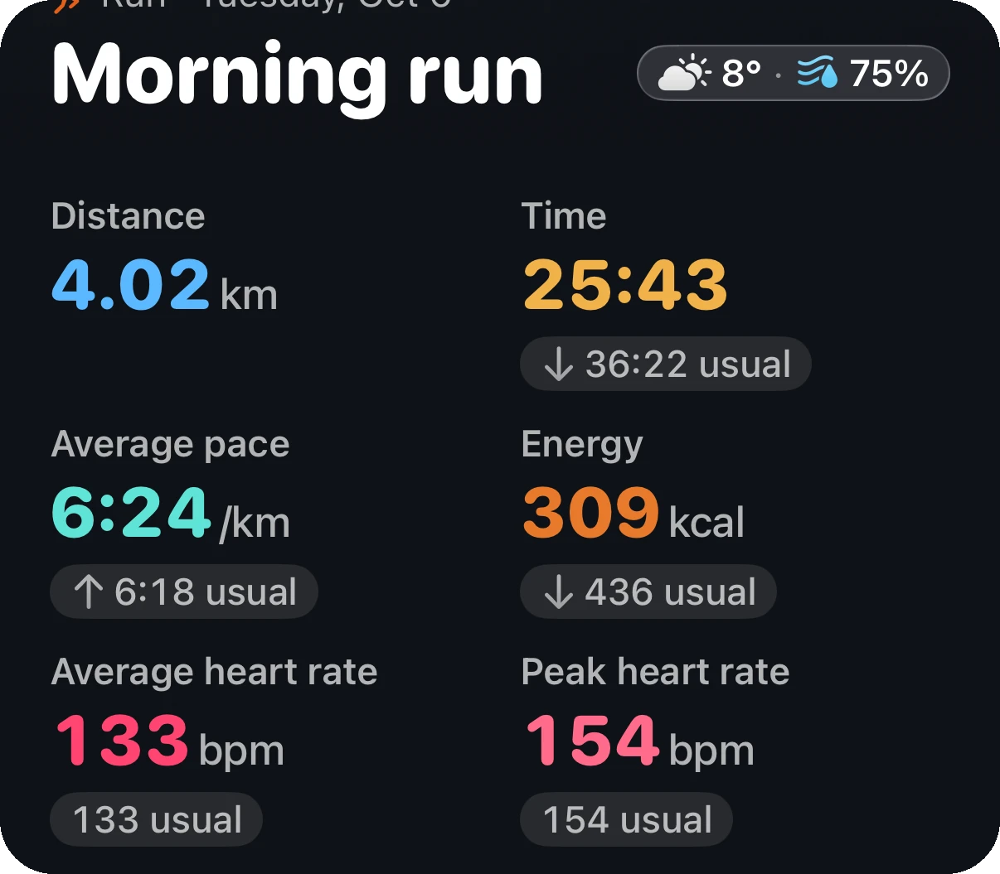
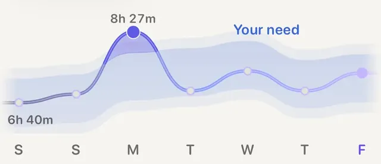

Problem · Sleep

Usually yes, just easier. One short night on its own rarely calls for a rest day, but it is a good reason to drop the hard session. What tips the answer towards rest is when the bad night comes with other signs: a resting heart rate above your usual, lower heart rate variability (HRV) than your usual, a heavy week of training, or anything that feels like illness.
The key word is your. A resting heart rate of 58 can be calm for one runner and high for another. Every signal below only means something against your own normal range.
Fullagar and colleagues (2015) reviewed the research on sleep loss and exercise. The effects are less dramatic than people fear, and they are uneven. Mood, focus and how hard an effort feels tend to suffer reliably. Long, steady efforts tend to suffer more than one short all-out effort. Craven and colleagues (2022) pooled the studies on acute sleep loss and found that it lowered physical performance on average, by a modest amount, with wide differences between studies and between people.
After a short night, the same pace simply feels harder.
For a normal training day, that means:
Sleep is only half of the morning picture. The other half is what your heart did while you slept.
Plews and colleagues (2013), working with elite endurance athletes, argued for reading HRV as a rolling weekly average against the person's own baseline rather than reacting to any single morning, because day-to-day values are noisy. That is the same reason a single odd reading is not a verdict.
There is also evidence that listening to these signals pays off. In Kiviniemi and colleagues (2007), men who trained hard only on mornings when their HRV had not dropped, and went easy or rested when it had, improved their fitness more than a group on a fixed plan. Vesterinen and colleagues (2016) found something similar in recreational runners over eight weeks: plans adjusted to each runner's HRV against their own baseline did at least as well as a fixed plan. The lesson is not that a number knows best. It is that easing off on strained days and pushing on fresh ones works at least as well as following a calendar. Why the comparison has to be with yourself: why a watch should compare you to yourself.
A useful habit on any doubtful morning: start easy and check in after ten minutes. If your legs feel heavy, your heart rate is unusually high for the pace, or the effort feels wrong, keep it easy or head home. You lose almost nothing by doing that. If you end up skipping, should I make up a missed workout? covers what to do next.
A bad night is one column, not the whole answer.

Your nights against your needAera's Sleep tab draws your last seven nights against the sleep need it learned from your own nights, so one short night and a run of them look different at a glance.
Aera, for iPhone and Apple Watch
Aera puts these signs side by side each morning. From Apple Health it reads last night's sleep against the need it learned from you, your overnight resting heart rate and HRV against your own usual, and your last seven days of training against your usual week. It needs a few weeks of your nights and workouts first; until then it says it is still learning. The call on the day stays yours.
Every number opens a Field Guide article that shows how it was worked out and where it stops being reliable. There is no account, and health numbers are worked out on your iPhone. Your scores and their last 30 days are free. Also free: a route planner that keeps to real paths, with turn-by-turn directions on iPhone or Apple Watch.
Aera is not a medical device. Watch sleep stages are estimates, so they count for less, and Aera says so.
Usually yes, but make it easy. One short night on its own rarely calls for a rest day, but it is a good reason to swap intervals or a race-pace session for an easy run. Rest instead if you have signs of illness, or if the short night comes with a resting heart rate above your usual, lower HRV than your usual and a heavy week behind you.
Neither, most of the time. Keep the run and drop the intensity: a shorter, conversational run still does its job. Skip it when you feel ill, have a fever or chest symptoms, or when several signals have been off for more than one morning.
Compared with your own usual, it means your body was working harder overnight than normal. Hard training, alcohol, a late meal, heat, stress, a short night or an illness starting can all cause it. One morning is often noise; several mornings in a row are worth taking seriously.
Total time asleep and how broken the night was are the more dependable parts. Sleep stages on a watch are estimates from movement and heart rate, not brain measurements, so do not decide a training day on deep or REM minutes alone.
Related field notes: what a readiness score means · how much sleep you actually need · what zone 2 training is
Related guide: How to plan a running route
 Or scan with your iPhone
Or scan with your iPhoneFree to start. No account. Works with the watch you already wear.